FPP3 Chapter 2 Graphics Exercise
Randy Howk
February 08, 2026
- 1 Explore four time series
- 2 Peak closing price day(s) for each GAFA stock
- 3 tute1.csv: import, tsibble conversion, plots, and faceting
- 4 USgas: annual natural gas consumption by state (New England)
- 5 tourism.xlsx: recreate
tourismtsibble and summaries - 6 aus_arrivals: compare arrivals from Japan, NZ, UK, US - JUST FOR FUN
- 7 aus_retail: sample a series and explore - JUST FOR FUN
- 8 Explore five additional series with common graphics + ACF
- 9 Match time plots to ACF plots - JUST FOR FUN
- 10 aus_livestock pigs in Victoria (1990–1995): autoplot + ACF; compare to white noise - JUST FOR FUN
- 11 Google stock daily changes: re-indexing, differences, ACF; assess white noise - JUST FOR FUN
1 Explore four time series
Series explored:
- Bricks from
aus_production - Lynx from
pelt - Close from
gafa_stock - Demand from
vic_elec
1.1 Dataset help pages
?aus_production
?pelt
?gafa_stock
?vic_elec1.2 Time interval of each series
Below, I compute the interval from each tsibble index.
bricks_ts <- aus_production |> select(Quarter, Bricks)
lynx_ts <- pelt_long(pelt) |> filter(Animal == "Lynx")
close_ts <- gafa_stock |> select(Symbol, Date, Close)
demand_ts <- vic_elec |> select(Time, Demand)
bricks_interval <- bricks_ts |> tsibble::interval()
lynx_interval <- lynx_ts |> tsibble::interval()
close_interval <- close_ts |> tsibble::interval()
demand_interval <- demand_ts |> tsibble::interval()
bricks_interval## <interval[1]>
## [1] 1Qlynx_interval## <interval[1]>
## [1] 1Yclose_interval## <interval[1]>
## [1] !demand_interval## <interval[1]>
## [1] 30mAnswer (interpretation):
aus_production(Bricks) is quarterly (index isyearquarter).pelt(Lynx) is annual (index isyear).gafa_stock(Close) is daily trading days (dates exist only on trading days, so the calendar is not strictly regular daily).vic_elec(Demand) is half-hourly (sub-daily regular interval).
1.3 Time plots (autoplot)
# Bricks
bricks_ts |>
autoplot(Bricks) +
labs(title = "Australian brick production", x = "Quarter", y = "Bricks")
# Lynx
lynx_ts |>
autoplot(value) +
labs(title = "Lynx pelts", x = "Year", y = "Pelts")
# Close (all four stocks)
gafa_stock |>
autoplot(Close) +
labs(title = "Daily closing prices: GAFA", x = "Date", y = "Close")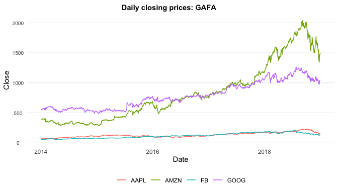
1.4 Demand plot with modified axis labels and title
demand_ts |>
autoplot(Demand) +
labs(
title = "Victoria electricity demand (half-hourly)",
x = "Time",
y = "Demand (MW)"
)
2 Peak closing price day(s) for each GAFA stock
Find the trading day(s) (ties possible) corresponding to the maximum closing price for each of the four stocks.
gafa_peaks <- gafa_stock |>
group_by(Symbol) |>
filter(Close == max(Close, na.rm = TRUE)) |>
arrange(Symbol, Date) |>
select(Symbol, Date, Close)
gafa_peaks## # A tsibble: 4 x 3 [!]
## # Key: Symbol [4]
## # Groups: Symbol [4]
## Symbol Date Close
## <chr> <date> <dbl>
## 1 AAPL 2018-10-03 232.
## 2 AMZN 2018-09-04 2040.
## 3 FB 2018-07-25 218.
## 4 GOOG 2018-07-26 1268.Answer: The table above lists the peak closing
date(s) and peak Close for each symbol.
3 tute1.csv: import, tsibble conversion, plots, and faceting
tute1.csv contains quarterly series
Sales, AdBudget, and
GDP (inflation-adjusted).
3.1 Download and read the data
tute1_url <- "https://otexts.com/fpp3/extrafiles/tute1.csv"
tute1 <- readr::read_csv(tute1_url)
dplyr::glimpse(tute1)## Rows: 100
## Columns: 4
## $ Quarter <date> 1981-03-01, 1981-06-01, 1981-09-01, 1981-12-01, 1982-03-01, …
## $ Sales <dbl> 1020.2, 889.2, 795.0, 1003.9, 1057.7, 944.4, 778.5, 932.5, 99…
## $ AdBudget <dbl> 659.2, 589.0, 512.5, 614.1, 647.2, 602.0, 530.7, 608.4, 637.9…
## $ GDP <dbl> 251.8, 290.9, 290.8, 292.4, 279.1, 254.0, 295.6, 271.7, 259.6…3.2 Convert to a quarterly tsibble
mytimeseries <- tute1 |>
mutate(Quarter = yearquarter(Quarter)) |>
as_tsibble(index = Quarter)
mytimeseries## # A tsibble: 100 x 4 [1Q]
## Quarter Sales AdBudget GDP
## <qtr> <dbl> <dbl> <dbl>
## 1 1981 Q1 1020. 659. 252.
## 2 1981 Q2 889. 589 291.
## 3 1981 Q3 795 512. 291.
## 4 1981 Q4 1004. 614. 292.
## 5 1982 Q1 1058. 647. 279.
## 6 1982 Q2 944. 602 254
## 7 1982 Q3 778. 531. 296.
## 8 1982 Q4 932. 608. 272.
## 9 1983 Q1 996. 638. 260.
## 10 1983 Q2 908. 582. 280.
## # ℹ 90 more rows3.3 Plot all three series with facets
mytimeseries |>
pivot_longer(-Quarter) |>
ggplot(aes(x = Quarter, y = value, colour = name)) +
geom_line() +
facet_grid(name ~ ., scales = "free_y") +
labs(title = "Sales, AdBudget, and GDP (facetted)", x = "Quarter", y = "")
3.4 Plot without
facet_grid()
mytimeseries |>
pivot_longer(-Quarter) |>
ggplot(aes(x = Quarter, y = value, colour = name)) +
geom_line() +
labs(title = "Sales, AdBudget, and GDP (no faceting)", x = "Quarter", y = "")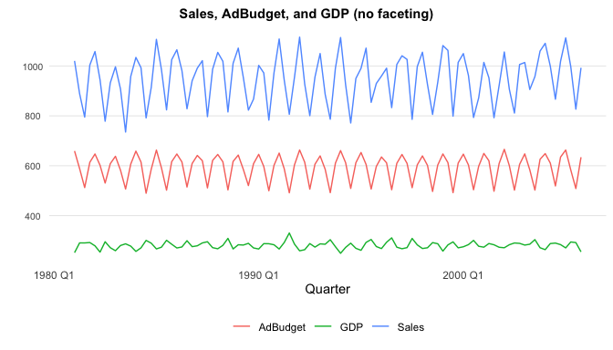
Answer: Without faceting (and a shared y-axis), the largest-scale series visually dominates and the smaller-scale series become difficult to compare.
4 USgas: annual natural gas consumption by state (New England)
4.1 Create a tsibble from
us_total (year index, state key)
data("us_total", package = "USgas")
gas_ts <- us_total |>
as_tsibble(index = year, key = state)
gas_ts## # A tsibble: 1,266 x 3 [1Y]
## # Key: state [53]
## year state y
## <int> <chr> <int>
## 1 1997 Alabama 324158
## 2 1998 Alabama 329134
## 3 1999 Alabama 337270
## 4 2000 Alabama 353614
## 5 2001 Alabama 332693
## 6 2002 Alabama 379343
## 7 2003 Alabama 350345
## 8 2004 Alabama 382367
## 9 2005 Alabama 353156
## 10 2006 Alabama 391093
## # ℹ 1,256 more rows4.2 Plot New England states
New England = Maine, Vermont, New Hampshire, Massachusetts, Connecticut, Rhode Island.
new_england <- c("Maine", "Vermont", "New Hampshire",
"Massachusetts", "Connecticut", "Rhode Island")
gas_ts |>
filter(state %in% new_england) |>
autoplot(y) +
labs(
title = "Annual natural gas consumption (New England states)",
x = "Year",
y = "Consumption"
)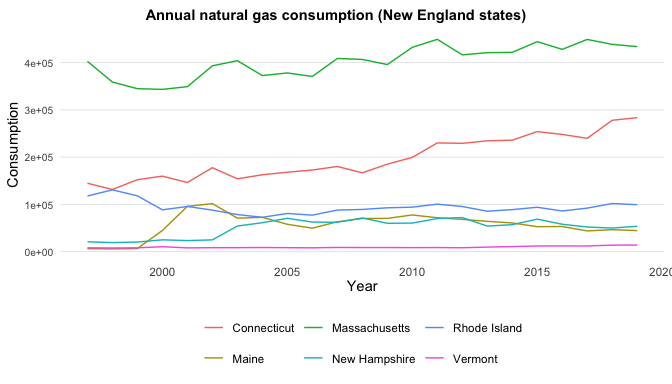
5 tourism.xlsx: recreate
tourism tsibble and summaries
5.1 Download and read tourism.xlsx
tourism_url <- "https://otexts.com/fpp3/extrafiles/tourism.xlsx"
tourism_file <- tempfile(fileext = ".xlsx")
download.file(tourism_url, tourism_file, mode = "wb")
tourism_raw <- readxl::read_excel(tourism_file)
dplyr::glimpse(tourism_raw)## Rows: 24,320
## Columns: 5
## $ Quarter <chr> "1998-01-01", "1998-04-01", "1998-07-01", "1998-10-01", "1999-…
## $ Region <chr> "Adelaide", "Adelaide", "Adelaide", "Adelaide", "Adelaide", "A…
## $ State <chr> "South Australia", "South Australia", "South Australia", "Sout…
## $ Purpose <chr> "Business", "Business", "Business", "Business", "Business", "B…
## $ Trips <dbl> 135.0777, 109.9873, 166.0347, 127.1605, 137.4485, 199.9126, 16…5.2 Create a tsibble
identical in structure to tsibble::tourism
tourism_ts <- tourism_raw |>
mutate(Quarter = yearquarter(Quarter)) |>
as_tsibble(
index = Quarter,
key = c(State, Region, Purpose)
)
tourism_ts## # A tsibble: 24,320 x 5 [1Q]
## # Key: State, Region, Purpose [304]
## Quarter Region State Purpose Trips
## <qtr> <chr> <chr> <chr> <dbl>
## 1 1998 Q1 Canberra ACT Business 150.
## 2 1998 Q2 Canberra ACT Business 99.9
## 3 1998 Q3 Canberra ACT Business 130.
## 4 1998 Q4 Canberra ACT Business 102.
## 5 1999 Q1 Canberra ACT Business 95.5
## 6 1999 Q2 Canberra ACT Business 229.
## 7 1999 Q3 Canberra ACT Business 109.
## 8 1999 Q4 Canberra ACT Business 159.
## 9 2000 Q1 Canberra ACT Business 105.
## 10 2000 Q2 Canberra ACT Business 202.
## # ℹ 24,310 more rows5.3 Ensure temporal ordering for each Region/Purpose
tourism_ts <- tourism_ts |>
arrange(Region, Purpose, Quarter)5.4 Region–Purpose combination with maximum average overnight trips
max_region_purpose <- tourism_ts |>
group_by(Region, Purpose) |>
summarise(avg_trips = mean(Trips, na.rm = TRUE), .groups = "drop") |>
arrange(desc(avg_trips)) |>
slice(1)
max_region_purpose## # A tsibble: 1 x 4 [1Q]
## # Key: Region, Purpose [1]
## Region Purpose Quarter avg_trips
## <chr> <chr> <qtr> <dbl>
## 1 Melbourne Visiting 2017 Q4 985.Answer: The row above identifies the
(Region, Purpose) combination with the greatest mean
Trips.
5.5 Total trips by State (combining Region and Purpose)
tourism_state_total <- tourism_ts |>
index_by(Quarter) |>
group_by(State) |>
summarise(Trips = sum(Trips, na.rm = TRUE)) |>
as_tsibble(index = Quarter, key = State)
tourism_state_total## # A tsibble: 640 x 3 [1Q]
## # Key: State [8]
## State Quarter Trips
## <chr> <qtr> <dbl>
## 1 ACT 1998 Q1 551.
## 2 ACT 1998 Q2 416.
## 3 ACT 1998 Q3 436.
## 4 ACT 1998 Q4 450.
## 5 ACT 1999 Q1 379.
## 6 ACT 1999 Q2 558.
## 7 ACT 1999 Q3 449.
## 8 ACT 1999 Q4 595.
## 9 ACT 2000 Q1 600.
## 10 ACT 2000 Q2 557.
## # ℹ 630 more rowstourism_state_total |>
autoplot(Trips) +
labs(title = "Total overnight trips by State", x = "Quarter", y = "Trips")
6 aus_arrivals: compare arrivals from Japan, NZ, UK, US - JUST FOR FUN
Use autoplot(), gg_season(), and
gg_subseries().
aus_arrivals |>
autoplot(Arrivals) +
labs(title = "International arrivals to Australia", x = "Quarter", y = "Arrivals")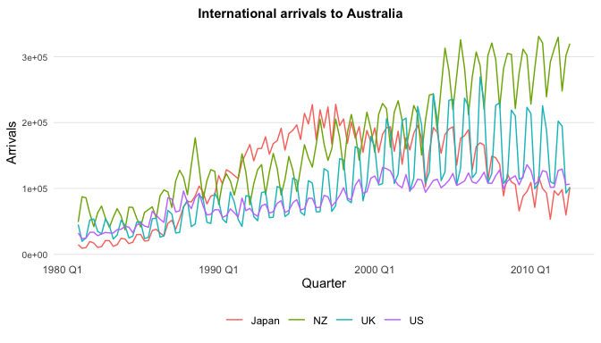
aus_arrivals |>
gg_season(Arrivals) +
labs(title = "Seasonal plot: arrivals to Australia", y = "Arrivals")
aus_arrivals |>
gg_subseries(Arrivals) +
labs(title = "Subseries plot: arrivals to Australia", y = "Arrivals")
Answer (unusual observations):
The subseries plot highlights deviations from the typical seasonal
pattern by showing each quarter separately over time. Japan exhibits
unusually low arrivals in Q2 and Q3 during later years, deviating
sharply from its normally strong seasonal structure. The United States
shows occasional Q3 spikes that exceed the typical seasonal range,
indicating one-off surges rather than regular seasonality. The UK also
displays increased variability in Q3 and Q4, with some years standing
out as unusually high. In contrast, New Zealand arrivals remain
relatively stable across all quarters, with no clear unusual
observations.
7 aus_retail: sample a series and explore - JUST FOR FUN
set.seed(67)
myseries <- aus_retail |>
filter(`Series ID` == sample(aus_retail$`Series ID`, 1))
myseries |> dplyr::glimpse()## Rows: 441
## Columns: 5
## Key: State, Industry [1]
## $ State <chr> "New South Wales", "New South Wales", "New South Wales", "…
## $ Industry <chr> "Department stores", "Department stores", "Department stor…
## $ `Series ID` <chr> "A3349790V", "A3349790V", "A3349790V", "A3349790V", "A3349…
## $ Month <mth> 1982 Apr, 1982 May, 1982 Jun, 1982 Jul, 1982 Aug, 1982 Sep…
## $ Turnover <dbl> 178.3, 202.8, 176.3, 172.6, 169.6, 181.4, 173.9, 206.6, 34…7.1 Graphics exploration
myseries |>
autoplot(Turnover) +
labs(title = "Selected retail turnover series", x = "Month", y = "Turnover")
myseries |>
gg_season(Turnover) +
labs(title = "Seasonal plot: selected retail series", y = "Turnover")
myseries |>
gg_subseries(Turnover) +
labs(title = "Subseries plot: selected retail series", y = "Turnover")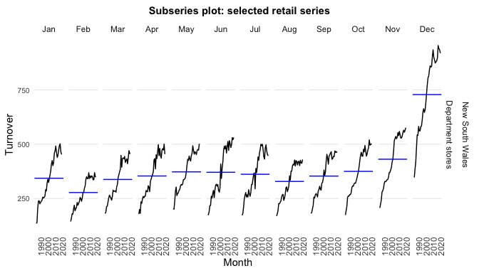
myseries |>
gg_lag(Turnover) +
labs(title = "Lag plot: selected retail series", y = "Turnover")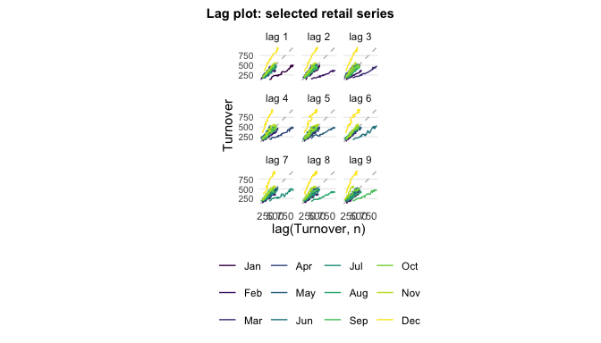
myseries |>
ACF(Turnover) |>
autoplot() +
labs(title = "ACF: selected retail series")
Answer (seasonality/cyclicity/trend):
- Seasonality is indicated by repeating within-year
patterns and ACF spikes at seasonal lags (e.g., 12 for monthly
data).
- Trend appears as persistent long-run
increase/decrease and often as slow ACF decay.
- Cyclicity shows as multi-year rises/falls not tied to
a fixed seasonal frequency.
Use the plots above to describe what is present in this specific
sampled series.
8 Explore five additional series with common graphics + ACF
Series: - “Total Private” Employed from
us_employment - Bricks from
aus_production - Hare from
pelt - “H02” Cost from PBS -
Barrels from us_gasoline
emp_private <- us_employment |>
filter(Title == "Total Private") |>
select(Month, Employed)
bricks_ts <- aus_production |> select(Quarter, Bricks)
hare_ts <- pelt_long(pelt) |> filter(Animal == "Hare")
pbs_keys <- key_vars(PBS)
pbs_h02 <- PBS |>
filter(ATC2 == "H02") |>
group_by(across(all_of(key_vars(PBS)))) |>
filter(dplyr::cur_group_id() == 1) |>
ungroup() |>
select(Month, Cost)
gas_barrels <- us_gasoline |> select(Week, Barrels)Helper to run the same exploration:
explore_series <- function(data, value_col, title_prefix = "") {
list(
time = data |> autoplot({{ value_col }}) +
labs(title = paste0(title_prefix, " — time plot")),
season = tryCatch(
data |> gg_season({{ value_col }}) + labs(title = paste0(title_prefix, " — seasonal plot")),
error = function(e) NULL
),
subseries = tryCatch(
data |> gg_subseries({{ value_col }}) + labs(title = paste0(title_prefix, " — subseries plot")),
error = function(e) NULL
),
lag = tryCatch(
data |> gg_lag({{ value_col }}) + labs(title = paste0(title_prefix, " — lag plot")),
error = function(e) NULL
),
acf = data |> ACF({{ value_col }}) |> autoplot() +
labs(title = paste0(title_prefix, " — ACF"))
)
}plots_emp <- explore_series(emp_private, Employed, "US Employment (Total Private)")
plots_emp$time; plots_emp$season; plots_emp$subseries; plots_emp$lag; plots_emp$acf
 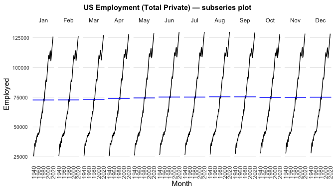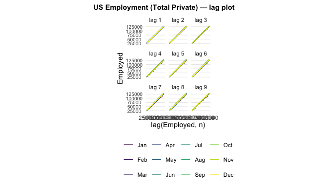
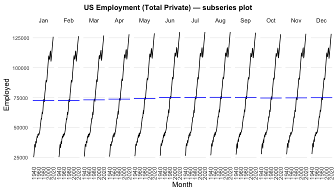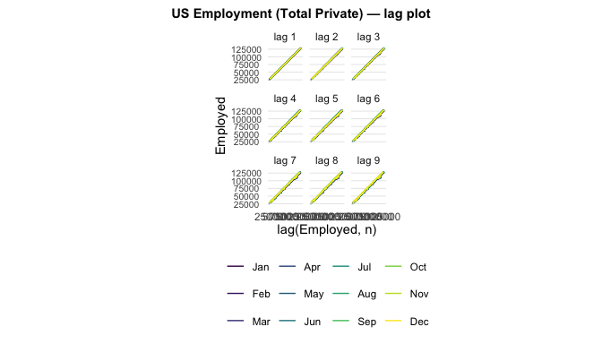
plots_bricks <- explore_series(bricks_ts, Bricks, "Australian Bricks Production")
plots_bricks$time; plots_bricks$season; plots_bricks$subseries; plots_bricks$lag; plots_bricks$acf 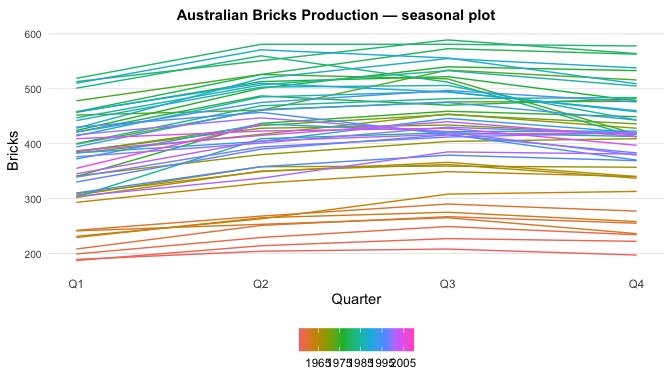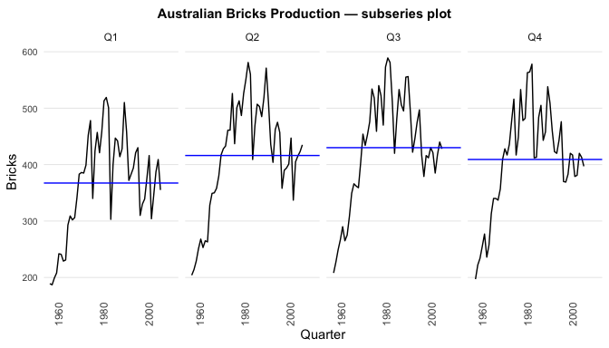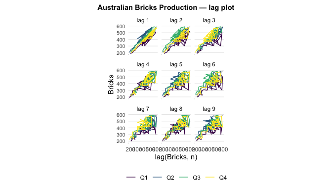
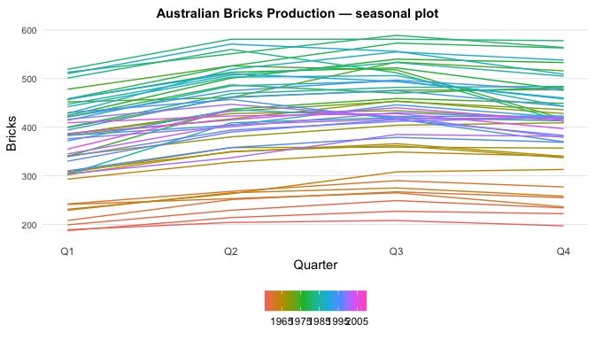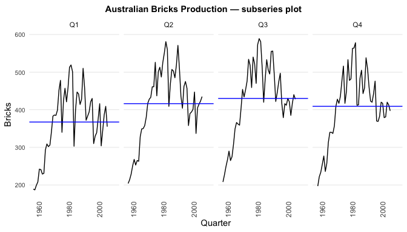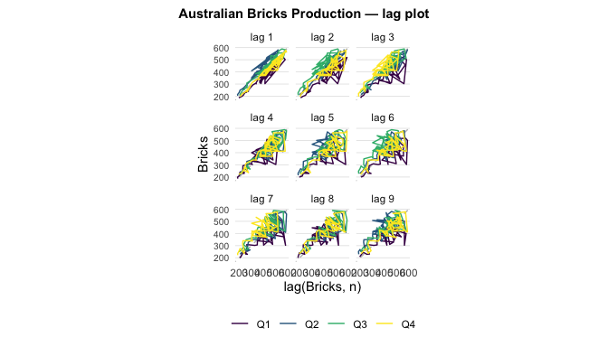
plots_hare <- explore_series(hare_ts, value, "Hare Pelts")
plots_hare$time; plots_hare$season; plots_hare$subseries; plots_hare$lag; plots_hare$acf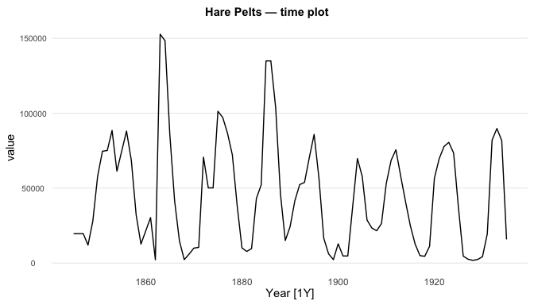
## NULL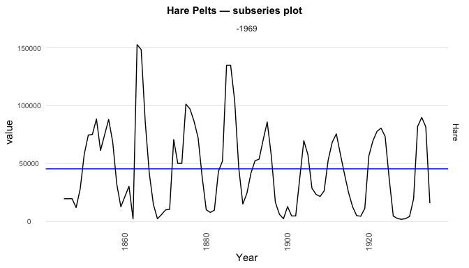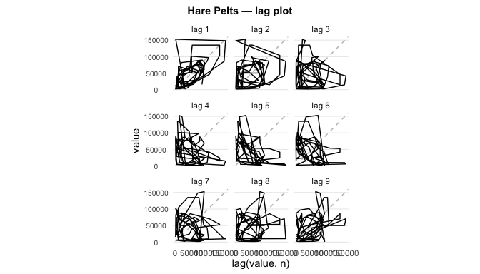
plots_pbs <- explore_series(pbs_h02, Cost, "PBS H02 Cost")
plots_pbs$time; plots_pbs$season; plots_pbs$subseries; plots_pbs$lag; plots_pbs$acf

 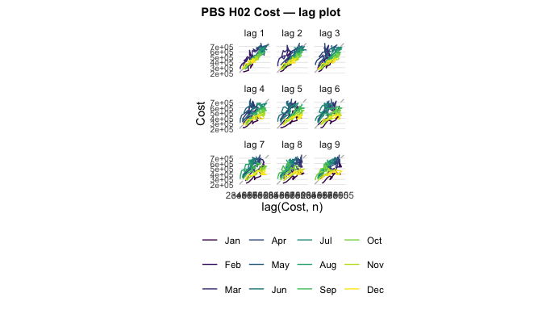
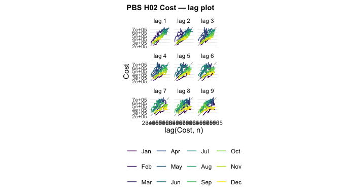
plots_gas <- explore_series(gas_barrels, Barrels, "US Gasoline Barrels")
plots_gas$time; plots_gas$season; plots_gas$subseries; plots_gas$lag; plots_gas$acf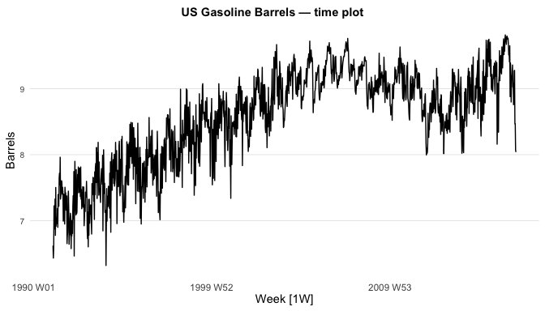 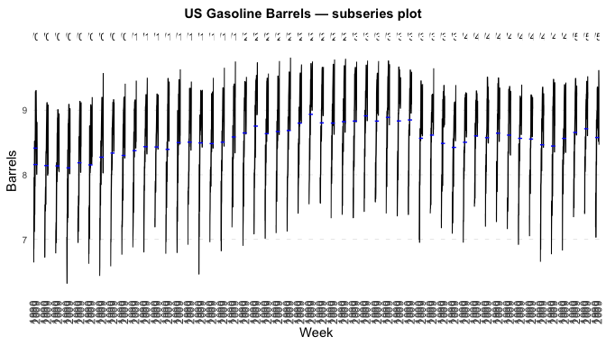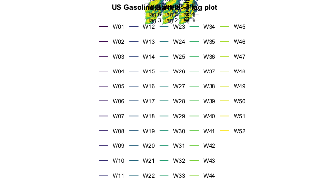
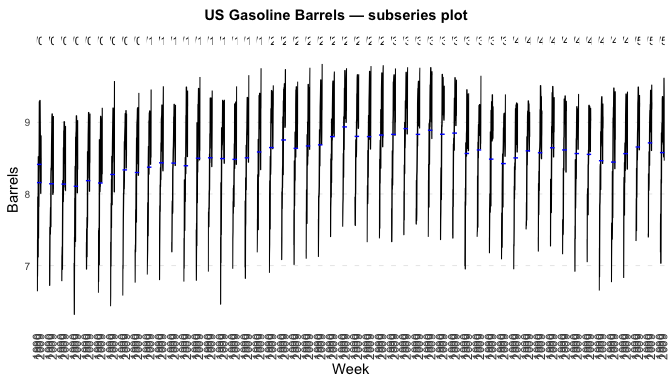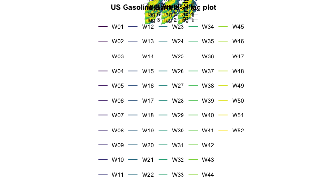
Answer (what we learn): - US Gasoline Barrels and PBS H02 Cost show clear seasonality: repeating within‑year patterns and ACF spikes at seasonal lags (and multiples). - US Employment (Total Private) shows a strong trend / nonstationarity: long‑run drift in the time plot and a slowly decaying ACF. - Hare Pelts shows cycles over multiple years: oscillations in the time plot with an ACF that alternates signs. - Australian Bricks Production shows unusual years/structural change: a sharp drop in the early 1980s followed by a sustained lower level and higher volatility from the early 1990s onward.
9 Match time plots to ACF plots - JUST FOR FUN
The book’s figure is included below for matching.
acf_url <- "https://otexts.com/fpp3/fpp_files/figure-html/acfguess-1.png"
acf_file <- file.path(tempdir(), "acfguess-1.png")
download.file(acf_url, acf_file, mode = "wb")
knitr::include_graphics(acf_file)
Answer: Based on the figure: - Time plot A matches ACF B - Time plot B matches ACF A - Time plot C matches ACF D - Time plot D matches ACF C
Justification (brief): - B → A: near‑zero, short‑memory ACF fits the cow temperature series. - A → B: strong seasonal spikes (esp. lag 12) fit monthly accidental deaths. - D → C: high, slowly decaying ACF fits the trending air passengers series. - C → D: oscillating, alternating‑sign ACF fits mink trappings cycles.
10 aus_livestock pigs in Victoria (1990–1995): autoplot + ACF; compare to white noise - JUST FOR FUN
pigs_vic_9095 <- aus_livestock |>
filter(Animal == "Pigs", State == "Victoria") |>
filter(year(Month) >= 1990, year(Month) <= 1995)
pigs_vic_9095 |>
autoplot(Count) +
labs(title = "Pigs slaughtered in Victoria (1990–1995)", x = "Month", y = "Count")
pigs_vic_9095 |>
ACF(Count) |>
autoplot() +
labs(title = "ACF: Pigs slaughtered in Victoria (1990–1995)")
Compare to longer period:
pigs_vic_full <- aus_livestock |>
filter(Animal == "Pigs", State == "Victoria")
pigs_vic_full |>
ACF(Count) |>
autoplot() +
labs(title = "ACF: Pigs slaughtered in Victoria (Full series)")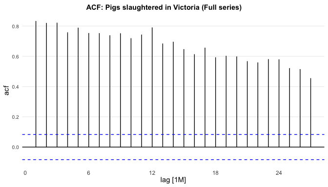
Answer:
- Compared with white noise, this series shows
structured autocorrelation (significant ACF spikes
rather than hovering near zero), indicating dependence and often
seasonality/persistence. - Using a longer period
typically yields a more stable ACF estimate and can
make seasonal and low-frequency structure clearer.
11 Google stock daily changes: re-indexing, differences, ACF; assess white noise - JUST FOR FUN
Compute daily changes in GOOG closing prices:
dgoog <- gafa_stock |>
filter(Symbol == "GOOG", year(Date) >= 2018) |>
mutate(trading_day = row_number()) |>
update_tsibble(index = trading_day, regular = TRUE) |>
mutate(diff = difference(Close))
dgoog |> dplyr::glimpse()## Rows: 251
## Columns: 10
## Key: Symbol [1]
## $ Symbol <chr> "GOOG", "GOOG", "GOOG", "GOOG", "GOOG", "GOOG", "GOOG", "G…
## $ Date <date> 2018-01-02, 2018-01-03, 2018-01-04, 2018-01-05, 2018-01-0…
## $ Open <dbl> 1048.34, 1064.31, 1088.00, 1094.00, 1102.23, 1109.40, 1097…
## $ High <dbl> 1066.940, 1086.290, 1093.570, 1104.250, 1111.270, 1110.570…
## $ Low <dbl> 1045.230, 1063.210, 1084.002, 1092.000, 1101.620, 1101.231…
## $ Close <dbl> 1065.00, 1082.48, 1086.40, 1102.23, 1106.94, 1106.26, 1102…
## $ Adj_Close <dbl> 1065.00, 1082.48, 1086.40, 1102.23, 1106.94, 1106.26, 1102…
## $ Volume <dbl> 1237600, 1430200, 1004600, 1279100, 1047600, 902500, 10428…
## $ trading_day <int> 1, 2, 3, 4, 5, 6, 7, 8, 9, 10, 11, 12, 13, 14, 15, 16, 17,…
## $ diff <dbl> NA, 17.479980, 3.920044, 15.829956, 4.709961, -0.679931, -…11.1 Why re-index the tsibble?
Answer: The Date index is not strictly
regular because trading does not occur on weekends/holidays. Re-indexing
by trading_day creates a regular index
where each step is “next observed trading day,” so lag operations (and
the ACF) align with equal steps.
11.2 Plot differences and their ACF
dgoog |>
autoplot(diff) +
labs(title = "Daily changes in GOOG closing price", x = "Trading day index", y = "Difference in Close")
dgoog |>
ACF(diff) |>
autoplot() +
labs(title = "ACF: Daily changes in GOOG closing price")
11.3 Do the changes look like white noise?
Answer: Price changes often show weak linear autocorrelation (ACF near zero at most lags), consistent with white noise in the mean. However, volatility clustering (periods of larger/smaller variability) can still appear in the time plot, so the series may not be i.i.d. white noise in a strict sense.